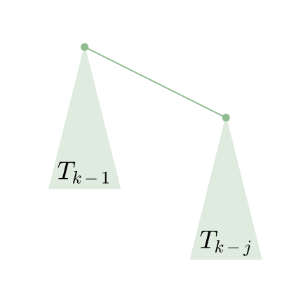

OI Wiki · prijevod · Strukture podatakaOI Wiki · translation · Data structures
Složenost union-findaDSU complexity
Sadržaj
Ovaj je odjeljak preuzet i prilagođen iz Vremenska složenost – kratko o analizi potencijala, uz dopuštenje izvornog autora.
Definicije
Ackermannova funkcija
Najprije dajemo definiciju \(\alpha(n)\). Da bismo je dali, najprije definiramo \(A_k(j)\).
Definiramo \(A_k(j)\) kao:
To je Ackermannova funkcija.
Ovdje \(f^i(x)\) označava \(i\) uzastopnih primjena funkcije \(f\) na \(x\), tj. \(f^0(x)=x\), \(f^i(x)=f(f^{i-1}(x))\).
Zatim definiramo \(\alpha(n)\) kao najmanji cijeli broj takav da je \(A_{\alpha(n)}(1)\geq n\). Uočite da smo je ranije opisali kao \(A_{\alpha(n)}(\alpha(n))\geq n\); u svakom slučaju obje rastu vrlo sporo i vrijednosti im ne prelaze 4.
Osnovne definicije
Svaki čvor ima rank. Rank ovdje nije broj čvorova, nego dubina. Početni rank čvora je 0; pri spajanju, ako dva čvora imaju različit rank, čvor s manjim rankom spaja se na čvor s većim rankom, a rank većeg čvora se ne mijenja. Inače se nasumično jedan čvor spoji na drugi, a rank korijena poveća se za 1. Rank korijena tako daje visinu stabla. Rank čvora \(x\) označavamo \(rnk(x)\), a slično roditelja čvora \(x\) označavamo \(fa(x)\). Uvijek vrijedi \(rnk(x)+1\leq rnk(fa(x))\).
Da bismo definirali funkciju potencijala, najprije definiramo pomoćnu funkciju \(level(x)\), gdje je \(level(x)=\max(k:rnk(fa(x))\geq A_k(rnk(x)))\). Kad je \(rnk(x)\geq1\), definiramo još jednu pomoćnu funkciju \(iter(x)=\max(i:rnk(fa(x))\geq A_{level(x)}^i(rnk(x))\). Za \(x\) u tim definicijama vrijedi \(rnk(x)>0\) i \(x\) nije korijen nekog stabla.
Gornje vas definicije možda malo zbunjuju. Ponovimo: za \(x\) i \(fa(x)\), ako je \(rnk(x)>0\), uvijek se može naći par \(i,k\) takav da je \(rnk(fa(x))\geq A_k^i(rnk(x))\); \(level(x)=\max(k)\), a uz taj uvjet \(iter(x)=\max(i)\). \(level\) opisuje najveću razinu iteracije funkcije \(A\), a \(iter\) najveći broj iteracija na toj najvećoj razini.
Za te dvije funkcije vrijedi: \(level(x)\) se tijekom operacija uvijek povećava ili ostaje isti, a ako se \(level(x)\) ne poveća, \(iter(x)\) se također samo povećava ili ostaje isti. Osim toga, uvijek zadovoljavaju sljedeće dvije nejednakosti:
S obzirom na definicije \(level(x)\), \(iter(x)\) i \(A_k^j\), to je lako dokazati, pa to prepuštamo čitatelju kao vježbu za upoznavanje s definicijama.
Definiramo funkciju potencijala \(\Phi(S)=\sum\limits_{x\in S}\Phi(x)\), gdje \(S\) označava cijeli union-find, a \(x\) čvor u njemu. Definiramo \(\Phi(x)\) kao:
Zatim preko promjena potencijala izazvanih operacijama dokazujemo da je amortizirana vremenska složenost \(\Theta(\alpha(n))\). Uočite da operacija \(union(x,y)\) koju ovdje razmatramo jamči da su \(x\) i \(y\) korijeni nekih stabala, pa ne treba dodatno izvoditi \(find(x)\) i \(find(y)\).
Vidimo da je potencijal uvijek nenegativan. Osim toga, na početku je potencijal union-finda \(0\).
Dokaz
Operacija union(x,y)
Njezino je vrijeme \(\Theta(1)\), pa razmatramo promjenu potencijala koju izaziva.
Pretpostavimo \(rnk(x)\leq rnk(y)\), tj. \(x\) se spaja na \(y\). Tada se potencijal može povećati samo čvorovima \(x\) (od korijena postaje ne-korijen), \(y\) (rank se može povećati) i djeci čvora \(y\) prije operacije (rank roditelja može se povećati). Najprije dokazujemo da se potencijal djeteta \(c\) čvora \(y\) prije operacije ne može povećati, a ako se smanji, smanji se barem za \(1\).
Neka je potencijal čvora \(c\) prije operacije \(\Phi(c)\), a nakon operacije \(\Phi(c')\); ovdje \(c\) može biti bilo koji ne-korijenski čvor s \(rnk(c)>0\), a operacija bilo koja operacija, uključujući operaciju find u nastavku. Razlikujemo tri slučaja.
- \(iter(c)\) i \(level(c)\) nisu se povećali. Očito \(\Phi(c)=\Phi(c')\).
- \(iter(c)\) se povećao, \(level(c)\) nije. Tada se \(iter(c)\) povećao barem za jedan, tj. \(\Phi(c')\leq \Phi(c)-1\): funkcija potencijala se smanjila, i to barem za 1.
- \(level(c)\) se povećao, a \(iter(c)\) se možda smanjio. No zbog \(0<iter(c)\leq rnk(c)\), \(iter(c)\) se smanji najviše za \(rnk(c)-1\), dok se \(level(c)\) poveća barem za \(1\). Iz definicije \(\Phi(c)=(\alpha(n)-level(c))\times rnk(c)-iter(c)\) slijedi \(\Phi(c')\leq\Phi(c)-1\).
- Ostali slučajevi. Budući da se \(rnk(c)\) ne mijenja, a \(rnk(fa(c))\) se ne smanjuje, oni ne postoje.
Dakle, potencijal se može povećati samo čvorovima \(x\) ili \(y\). Čvor \(x\) od korijena postaje ne-korijen; ako je \(rnk(x)=0\), uvijek vrijedi \(\Phi(x)=\Phi(x')=0\). Inače sigurno vrijedi \(\alpha(x)\times rnk(x)\geq(\alpha(n)-level(x))\times rnk(x)-iter(x)\), tj. \(\Phi(x')\leq \Phi(x)\).
Stoga je jedini čvor kojem se potencijal može povećati \(y\), a potencijal čvora \(y\) poveća se najviše za \(\alpha(n)\). Slijedi da je amortizirana vremenska složenost operacije \(union\) jednaka \(\Theta(\alpha(n))\).
Operacija find(a)
Ako put pretraživanja sadrži \(\Theta(s)\) čvorova, vremenska složenost pretraživanja očito je \(\Theta(s)\). Ako zbog operacije pretraživanja nijednom čvoru ne raste potencijal, a barem \(s-\alpha(n)\) čvorova potencijal smanji barem za \(1\), dokazano je da je vremenska složenost operacije \(find(a)\) jednaka \(\Theta(\alpha(n))\). Da ne bi došlo do zabune, ovdje kao argument koristimo \(a\), dok \(x\) općenito označava neki čvor union-finda.
Najprije dokazujemo da se nijednom čvoru ne povećava potencijal. Očito: gore smo dokazali da se potencijal ne-korijenskih čvorova ne povećava, a \(rnk\) korijena se ne mijenja, pa se nijednom čvoru potencijal ne povećava.
Zatim dokazujemo da se barem \(s-\alpha(n)\) čvorova potencijal smanji barem za \(1\). Gore smo dokazali da se potencijal čvora smanji barem za \(1\) ako se \(level(x)\) ili \(iter(x)\) promijeni. Dakle, dovoljno je dokazati da se barem \(s-\alpha(n)\) čvorova \(level(x)\) ili \(iter(x)\) promijeni.
Prisjetimo se definicije potencijala ne-korijenskog čvora, \(\Phi(x)=(\alpha(n)-level(x))\times rnk(x)-iter(x)\), gdje su \(level(x)\) i \(iter(x)\) najveći brojevi takvi da je \(rnk(fa(x))\geq A_{level(x)}^{iter(x)}(rnk(x))\).
Ako \(root_x\) označava korijen stabla u kojem je \(x\), dovoljno je dokazati \(rnk(root_x)\geq A_{level(x)}^{iter(x)+1}(rnk(x))\). Prema definiciji \(A_k^i\) vrijedi \(A_{level(x)}^{iter(x)+1}(rnk(x))=A_{level(x)}(A_{level(x)}^{iter(x)}(rnk(x)))\).
Napomena: \(k(x)\) može označavati \(level(x)\), a \(i(x)\) \(iter(x)\), da izrazi ne bi bili predugi. Ovdje to znači \(rnk(root_x)\geq A_{k(x)}(A_{k(x)}^{i(x)}(x))\).
Kad ovo pročitate, možda ćete pomisliti „što je sad ovo”. To znači da biste možda trebali pročitati još nekoliko puta ili preskočiti dio i vratiti mu se poslije.
Ovdje nam treba još jedan vanjski \(A_{k(x)}\), što znači da možda trebamo naći još jedan čvor \(y\). Neka je \(y\) čvor na putu pretraživanja nakon \(x\) za koji vrijedi \(k(y)=k(x)\); „nakon na putu pretraživanja” znači „predak od \(x\)”. Očito nema svaki \(x\) takav \(y\). Lako se dokazuje da čvorova \(x\) bez takvog \(y\) ima najviše \(\alpha(n)+2\), jer takav \(y\) nemaju samo posljednji \(x\) za svaki \(k\) te \(a\) i \(root_a\).
Još jednom naglašavamo da \(fa(x)\) označava roditelja čvora \(x\) prije kompresije puta, a roditelja čvora \(x\) nakon kompresije puta uvijek označavamo \(root_x\). Za svaki \(x\) za koji postoji \(y\) uvijek vrijedi \(rnk(y)\geq rnk(fa(x))\). Istodobno imamo \(rnk(fa(x))\geq A_{k(x)}^{i(x)}(rnk(x))\). Budući da je \(k(x)=k(y)\), oboje označavamo s \(k\), tj. \(rnk(fa(x))\geq A_k^{i(x)}(rnk(x))\). Trebamo konstruirati jedan \(A_k\), pa se ne moramo obazirati na vrijednost \(iter(y)\) i izravno koristimo oslabljenu verziju \(rnk(fa(y))\geq A_k(rnk(y))\).
Ako nejednakosti spojimo, događa se nešto čarobno. Dobivamo \(rnk(fa(y))\geq A_k^{i(x)+1}(rnk(x))\). Drugim riječima, iterirajući od \(rnk(x)\) prema \(rnk(fa(y))\), \(A_k\) se može primijeniti barem \(i(x)+1\) puta a da se ne premaši \(rnk(fa(y))\).
Očito vrijedi \(rnk(root_y)\geq rnk(fa(y))\), a \(rnk(x)\) se pri kompresiji puta ne mijenja. Stoga dobivamo \(rnk(root_x)\geq A_k^{i(x)+1}(rnk(x))\), tj. vrijednost \(iter(x)\) povećava se barem za 1, a ako se \(rnk(x)\) nije povećao, onda se sigurno povećao \(level(x)\).
Dakle, \(\Phi(x)\) se smanjio barem za 1. Budući da takvih čvorova \(x\) ima barem \(s-\alpha(n)-2\), \(\Phi(S)\) se na kraju smanji barem za \(s-\alpha(n)-2\), pa je amortizirana vremenska složenost \(\Theta(\alpha(n)+2)=\Theta(\alpha(n))\).
Zašto union-find može biti „srušen” posebnim testovima
Pitanje je zapravo: ako ne spajamo po ranku, koja se svojstva narušavaju tako da se vremenska složenost union-finda ne može zajamčiti kao \(\Theta(m\alpha(n))\)?
Ako pri spajanju čvor s većim \(rnk\) spojimo na čvor s manjim \(rnk\), tada \(rnk\) čvora s manjim \(rnk\) postavimo na \(rnk\) drugog čvora uvećan za jedan. Tako jamčimo \(rnk(fa(x))\geq rnk(x)+1\), pa ne dolazi do narušavanja svojstava nalik „compile erroru posvuda”.
Očito je da u tom slučaju narušavamo tvrdnju iz analize funkcije \(union(x,y)\) da se „potencijal čvora \(y\) poveća najviše za \(\alpha(n)\)”.
Postoji struktura koja vremensku složenost union-finda s kompresijom puta spušta na \(\Omega(m\log_{1+\frac{m}{n}}n)\); definirana je ovako:
binomno stablo (zapravo se malo razlikuje od običnog binomnog stabla), gdje je \(j\) konstanta, a \(T_k\) je \(T_{k-1}\) kojem je kao dijete korijena dodan \(T_{k-j}\).

Rubni uvjet: \(T_1\) do \(T_j\) su pojedinačni čvorovi.
Neka je \(rnk(T_k)=r_k\); tada je \(r_k=(k-1)/j\) (dokaz izostavljen). U svakoj rundi operacija spojimo ga na jedan samostalan čvor, a zatim pretražimo \(j\) čvorova na dnu. Drugim riječima, kad ga spojimo na samostalni čvor, potencijal tog čvora poraste za \((k-1)/j+1\). Za \(j=\lfloor\frac{m}{n}\rfloor\), \(i=\lfloor\log_{j+1}\frac{n}{2}\rfloor\), \(k=ij\) porast potencijala iznosi:
Preoblikovanjem i uklanjanjem svih zaokruživanja dobivamo da je porast potencijala \(\geq \alpha(n)\times(\log_{1+\frac{m}{n}}n-\frac{n}{m})\), što za \(m\) operacija daje \(\Omega(m\log_{1+\frac{m}{n}}n-n)=\Omega(m\log_{1+\frac{m}{n}}n)\).
O heurističkom spajanju
Budući da je spajanje po ranku teže napisati od heurističkog spajanja, mnogi iskusni natjecatelji union-find pišu s heurističkim spajanjem. Konkretno, za svaki korijen održava se \(size(x)\) i svaki se put manji \(size\) spaja na veći.
Može li se, dakle, heurističko spajanje „srušiti”?
Najprije to možemo objasniti svojstvima ranka koja sudjeluju u dokazu. Ako \(size\) može preuzeti ulogu \(rnk\), heurističko spajanje može se koristiti. Ukratko, svojstva ranka koja sudjeluju u dokazu su sljedeća tri:
- Pri svakom spajanju rank se poveća najviše jednom čvoru, i to najviše za 1.
- Uvijek vrijedi \(rnk(fa(x))\geq rnk(x)+1\).
- Rank čvora se ne smanjuje.
Drugo i treće svojstvo \(siz\) očito zadovoljava, ali prvo ne: ako \(x\) spojimo na \(y\), \(siz(y)\) se poveća za \(siz(x)\).
Zato možemo razmotriti zamjenu \(rnk(x)\) s \(\log_2 siz(x)\).
Što se tiče prvog svojstva, budući da se \(siz\) čvora najviše udvostruči, \(\log_2 siz(x)\) poraste najviše za 1. Za drugo i treće svojstvo zaključak je prilično očit, pa dokaz izostavljamo.
Dakle, ako ne želite pisati spajanje po ranku, pišite heurističko spajanje; vremenska složenost i dalje je \(\Theta(m\alpha(n))\).
Contents
This section is reproduced and adapted from Time Complexity -- A Brief Discussion of Potential Analysis, with the permission of the original author.
Definitions
Ackermann function
First we give the definition of \(\alpha(n)\). To do so, we first define \(A_k(j)\).
Define \(A_k(j)\) as:
This is the Ackermann function.
Here \(f^i(x)\) denotes applying \(f\) to \(x\) \(i\) times in succession, i.e. \(f^0(x)=x\), \(f^i(x)=f(f^{i-1}(x))\).
Then define \(\alpha(n)\) as the smallest integer such that \(A_{\alpha(n)}(1)\geq n\). Note that we previously described it as \(A_{\alpha(n)}(\alpha(n))\geq n\); either way they both grow very slowly and their values never exceed 4.
Basic definitions
Every node has a rank. The rank here is not the number of nodes but the depth. The initial rank of a node is 0; when merging, if the two nodes have different ranks, the node with the smaller rank is attached to the node with the larger rank and the larger node's rank is not updated. Otherwise one node is attached to the other at random and the rank of the root is increased by 1. The rank of the root thus gives the height of the tree. Denote the rank of \(x\) by \(rnk(x)\), and similarly the parent of \(x\) by \(fa(x)\). We always have \(rnk(x)+1\leq rnk(fa(x))\).
To define the potential function, we first need an auxiliary function \(level(x)\), where \(level(x)=\max(k:rnk(fa(x))\geq A_k(rnk(x)))\). When \(rnk(x)\geq1\), define another auxiliary function \(iter(x)=\max(i:rnk(fa(x))\geq A_{level(x)}^i(rnk(x))\). The \(x\) in these definitions all satisfy \(rnk(x)>0\) and \(x\) is not the root of any tree.
The definitions above may make you a little dizzy. Let us sort them out again: for an \(x\) and \(fa(x)\), if \(rnk(x)>0\), we can always find a pair \(i,k\) such that \(rnk(fa(x))\geq A_k^i(rnk(x))\); \(level(x)=\max(k)\), and under that premise \(iter(x)=\max(i)\). \(level\) describes the maximum iteration level of \(A\), and \(iter\) the maximum number of iterations at that maximum level.
For these two functions, \(level(x)\) always increases or stays the same as operations proceed, and if \(level(x)\) does not increase, \(iter(x)\) also only increases or stays the same. Moreover, they always satisfy the following two inequalities:
Considering the definitions of \(level(x)\), \(iter(x)\) and \(A_k^j\), these are easy to prove and are left to the reader as an exercise for getting familiar with the definitions.
Define the potential function \(\Phi(S)=\sum\limits_{x\in S}\Phi(x)\), where \(S\) denotes the whole DSU and \(x\) a node in it. Define \(\Phi(x)\) as:
Then we prove that the amortized time complexity is \(\Theta(\alpha(n))\) through the changes in potential caused by the operations. Note that the \(union(x,y)\) operation discussed here guarantees that \(x\) and \(y\) are both roots of some trees, so there is no need to additionally perform \(find(x)\) and \(find(y)\).
One can see that the potential is always non-negative. Also, at the start the potential of the DSU is \(0\).
Proof
The union(x,y) operation
Its time cost is \(\Theta(1)\), so we consider the change in potential it causes.
Here we assume \(rnk(x)\leq rnk(y)\), i.e. \(x\) is attached to \(y\). Then the only nodes whose potential can increase are \(x\) (changing from a root to a non-root), \(y\) (its rank may increase) and the children of \(y\) before the operation (the rank of their parent may increase). We first prove that the potential of a child \(c\) of \(y\) before the operation cannot increase, and if it decreases, it decreases by at least \(1\).
Let the potential of \(c\) before the operation be \(\Phi(c)\) and after the operation \(\Phi(c')\); here \(c\) can be any non-root node with \(rnk(c)>0\), and the operation can be any operation, including the find operation below. We distinguish three cases.
- Neither \(iter(c)\) nor \(level(c)\) increased. Clearly \(\Phi(c)=\Phi(c')\).
- \(iter(c)\) increased and \(level(c)\) did not. Here \(iter(c)\) increased by at least one, i.e. \(\Phi(c')\leq \Phi(c)-1\); the potential function decreased, by at least 1.
- \(level(c)\) increased and \(iter(c)\) may have decreased. But since \(0<iter(c)\leq rnk(c)\), \(iter(c)\) decreases by at most \(rnk(c)-1\), while \(level(c)\) increases by at least \(1\). From the definition \(\Phi(c)=(\alpha(n)-level(c))\times rnk(c)-iter(c)\) we get \(\Phi(c')\leq\Phi(c)-1\).
- Other cases. Since \(rnk(c)\) is unchanged and \(rnk(fa(c))\) does not decrease, these do not exist.
So the only nodes whose potential can increase are \(x\) or \(y\). Now \(x\) changes from a root to a non-root; if \(rnk(x)=0\) we always have \(\Phi(x)=\Phi(x')=0\). Otherwise we must have \(\alpha(x)\times rnk(x)\geq(\alpha(n)-level(x))\times rnk(x)-iter(x)\), i.e. \(\Phi(x')\leq \Phi(x)\).
Therefore the only node whose potential may increase is \(y\), and the potential of \(y\) increases by at most \(\alpha(n)\). Hence the amortized time complexity of the \(union\) operation is \(\Theta(\alpha(n))\).
The find(a) operation
If the search path contains \(\Theta(s)\) nodes, the time complexity of the search is obviously \(\Theta(s)\). If, due to the find operation, no node's potential increases and at least \(s-\alpha(n)\) nodes have their potential decreased by at least \(1\), then the time complexity of \(find(a)\) is proven to be \(\Theta(\alpha(n))\). To avoid confusion, \(a\) is used as the argument here, while every \(x\) that appears refers generically to some node in the DSU.
First we prove that no node's potential increases. Clearly, we proved above that the potential of all non-root nodes does not increase, and the \(rnk\) of the root does not change, so no node's potential increases.
Next we prove that at least \(s-\alpha(n)\) nodes have their potential decreased by at least \(1\). We proved above that if \(level(x)\) or \(iter(x)\) changes, the potential decreases by at least \(1\). So it suffices to prove that at least \(s-\alpha(n)\) nodes have \(level(x)\) or \(iter(x)\) changed.
Recall the definition of the potential of a non-root node, \(\Phi(x)=(\alpha(n)-level(x))\times rnk(x)-iter(x)\), where \(level(x)\) and \(iter(x)\) are the largest numbers such that \(rnk(fa(x))\geq A_{level(x)}^{iter(x)}(rnk(x))\).
So if \(root_x\) denotes the root of the tree containing \(x\), it suffices to prove \(rnk(root_x)\geq A_{level(x)}^{iter(x)+1}(rnk(x))\). By the definition of \(A_k^i\), \(A_{level(x)}^{iter(x)+1}(rnk(x))=A_{level(x)}(A_{level(x)}^{iter(x)}(rnk(x)))\).
Note that we may use \(k(x)\) for \(level(x)\) and \(i(x)\) for \(iter(x)\) to keep the formulas from getting too long. Here that is \(rnk(root_x)\geq A_{k(x)}(A_{k(x)}^{i(x)}(x))\).
When you get here you may have a "what on earth is this" feeling. That means you may need to read it a few more times, or skip some content and come back later.
Here we need an outer \(A_{k(x)}\), which means we may need to find another node \(y\). Let \(y\) be a node after \(x\) on the search path with \(k(y)=k(x)\), where "after on the search path" means "an ancestor of \(x\)". Obviously not every \(x\) has such a \(y\). It is easy to prove that there are at most \(\alpha(n)+2\) nodes \(x\) without such a \(y\), because only the last \(x\) for each \(k\), together with \(a\) and \(root_a\), have no such \(y\).
We stress again that \(fa(x)\) refers to the parent of \(x\) before path compression, and the parent of \(x\) after path compression is always denoted \(root_x\). For every \(x\) for which \(y\) exists, we always have \(rnk(y)\geq rnk(fa(x))\). At the same time we have \(rnk(fa(x))\geq A_{k(x)}^{i(x)}(rnk(x))\). Since \(k(x)=k(y)\), we refer to both as \(k\), i.e. \(rnk(fa(x))\geq A_k^{i(x)}(rnk(x))\). We need to construct an \(A_k\), so we can ignore the value of \(iter(y)\) and directly use the weakened version \(rnk(fa(y))\geq A_k(rnk(y))\).
If we combine the inequalities, something magical happens. We find that \(rnk(fa(y))\geq A_k^{i(x)+1}(rnk(x))\). In other words, iterating from \(rnk(x)\) toward \(rnk(fa(y))\), \(A_k\) can be applied at least \(i(x)+1\) times without exceeding \(rnk(fa(y))\).
Obviously \(rnk(root_y)\geq rnk(fa(y))\), and \(rnk(x)\) does not change during path compression. Therefore we get \(rnk(root_x)\geq A_k^{i(x)+1}(rnk(x))\), which means the value of \(iter(x)\) increases by at least 1; if \(rnk(x)\) did not increase, then \(level(x)\) must have increased.
So \(\Phi(x)\) decreased by at least 1. Since there are at least \(s-\alpha(n)-2\) such nodes \(x\), in the end \(\Phi(S)\) decreases by at least \(s-\alpha(n)-2\), and the amortized time complexity is \(\Theta(\alpha(n)+2)=\Theta(\alpha(n))\).
Why a DSU can be hacked
This question asks: if we do not union by rank, which properties are broken so that the time complexity of the DSU can no longer be guaranteed to be \(\Theta(m\alpha(n))\)?
If, when merging, a node with larger \(rnk\) is attached to a node with smaller \(rnk\), we set the \(rnk\) of the node with the smaller \(rnk\) to the other node's \(rnk\) plus one. This way we can guarantee \(rnk(fa(x))\geq rnk(x)+1\), so there is no violation of properties resembling "compile errors everywhere".
Obviously, in this case what we break is the statement in the analysis of \(union(x,y)\) that "the potential of \(y\) increases by at most \(\alpha(n)\)".
There is a structure that lowers the time complexity of a path-compression DSU to \(\Omega(m\log_{1+\frac{m}{n}}n)\), defined as follows:
a binomial tree (actually somewhat different from the usual binomial tree), where \(j\) is a constant and \(T_k\) is a \(T_{k-1}\) with a \(T_{k-j}\) added as a child of the root.
Boundary condition: \(T_1\) through \(T_j\) are each a single node.
Let \(rnk(T_k)=r_k\); here we have \(r_k=(k-1)/j\) (proof omitted). In each round of operations we attach it to a single node and then query the \(j\) nodes at the bottom. That is, when we attach it to the single node, the potential of the single node rises by \((k-1)/j+1\). With \(j=\lfloor\frac{m}{n}\rfloor\), \(i=\lfloor\log_{j+1}\frac{n}{2}\rfloor\), \(k=ij\), the increase in potential is:
Rearranging and removing all the floor symbols, we get that the increase in potential is \(\geq \alpha(n)\times(\log_{1+\frac{m}{n}}n-\frac{n}{m})\), and for \(m\) operations that is \(\Omega(m\log_{1+\frac{m}{n}}n-n)=\Omega(m\log_{1+\frac{m}{n}}n)\).
About union by size (heuristic merging)
Since union by rank is harder to write than union by size, many strong contestants choose to write the DSU with union by size. Specifically, a \(size(x)\) is maintained for each root, and each time the smaller \(size\) is merged into the larger one.
So, can union by size be hacked?
First, this can be explained through the properties of rank used in the proof. If \(size\) can take the place of \(rnk\), then union by size can be used. To summarize quickly, the properties of rank used in the proof are the following three:
- In each merge, at most one node's rank rises, and by at most 1.
- We always have \(rnk(fa(x))\geq rnk(x)+1\).
- The rank of a node never decreases.
Regarding the second and third, \(siz\) obviously satisfies them, but the first is not satisfied: if \(x\) is merged into \(y\), \(siz(y)\) grows by \(siz(x)\).
So we can consider replacing \(rnk(x)\) with \(\log_2 siz(x)\).
Regarding the first property, since the \(siz\) of a node at most doubles, \(\log_2 siz(x)\) rises by at most 1. For the second and third properties the conclusion is fairly obvious, and the proof is omitted here.
So if you do not want to write union by rank, just write union by size; the time complexity is still \(\Theta(m\alpha(n))\).